<title>Release or protocol</title>
<meta name="viewport" content="width=device-width,initial-scale=1,viewport-fit=cover">
<!-- Round DY. Built by build.js from sim.json, census.json and the captures in
     shots/, which shoot.js takes of source.html, read only. Every figure is
     read off the run. The reactions are simulated. -->
<style>
:root{color-scheme:light;
 --bg:#E9E8E3;--panel:#FFFFFF;--panel-2:#F3F3F1;--edge:rgba(20,22,28,.10);--edge-2:rgba(20,22,28,.20);
 --ink:#15171D;--mid:#45433E;--dim:#6B6862;--accent:#2F6E92;--rel:#2F6E92;--rel-bg:rgba(47,110,146,.14);
 --pro:#8A6A10;--pro-bg:rgba(138,106,16,.16);--coin-bg:rgba(20,22,28,.05);--warn:#8A7520;--r:14px;--r-s:10px}
@media (prefers-color-scheme:dark){:root:not([data-theme="light"]){color-scheme:dark;
 --bg:#0C0D12;--panel:#171A22;--panel-2:#20242E;--edge:rgba(255,255,255,.08);--edge-2:rgba(255,255,255,.15);
 --ink:#EFEDE8;--mid:#B8B4AC;--dim:#8F8B85;--accent:#7EB8D4;--rel:#7EB8D4;--rel-bg:rgba(126,184,212,.16);
 --pro:#DFCC7E;--pro-bg:rgba(223,204,126,.14);--coin-bg:rgba(255,255,255,.04);--warn:#DFCC7E}}
:root[data-theme="dark"]{color-scheme:dark;
 --bg:#0C0D12;--panel:#171A22;--panel-2:#20242E;--edge:rgba(255,255,255,.08);--edge-2:rgba(255,255,255,.15);
 --ink:#EFEDE8;--mid:#B8B4AC;--dim:#8F8B85;--accent:#7EB8D4;--rel:#7EB8D4;--rel-bg:rgba(126,184,212,.16);
 --pro:#DFCC7E;--pro-bg:rgba(223,204,126,.14);--coin-bg:rgba(255,255,255,.04);--warn:#DFCC7E}
*{box-sizing:border-box}
body{margin:0;background:var(--bg);color:var(--ink);font:16px/1.58 Inter,system-ui,-apple-system,"Segoe UI",Roboto,sans-serif}
main{max-width:1120px;margin:0 auto;padding-inline:16px;padding-block:40px 96px}
h1{font-size:34px;line-height:1.15;margin:0 0 10px;font-weight:650;text-wrap:balance}
h2{font-size:23px;line-height:1.25;margin:64px 0 12px;font-weight:620;text-wrap:balance}
h3{font-size:17px;margin:0 0 8px;font-weight:600}
p,li{max-width:70ch;color:var(--mid)}
p b,li b,td b{color:var(--ink);font-weight:600}
.lede{font-size:18px;color:var(--ink);max-width:64ch}
a{color:var(--accent)}
a:focus-visible,summary:focus-visible{outline:2px solid var(--accent);outline-offset:2px}
code{font-size:13px;color:var(--dim)}
.num{font-variant-numeric:tabular-nums;white-space:nowrap}
.box{background:var(--panel);border:1px solid var(--edge);border-radius:var(--r);padding:18px 20px}
.answer{border:1px solid var(--rel);background:var(--panel);border-radius:var(--r);padding:20px 22px;margin:22px 0}
.answer h2{margin:0 0 10px}
.answer ol{margin:8px 0 0;padding-left:22px;display:grid;gap:8px}
.warn{border-color:var(--warn)}
.cols{display:grid;grid-template-columns:1fr 1fr;gap:18px}
.cols ul{margin:6px 0 0;padding-left:20px}
.wrap{overflow-x:auto}
table{border-collapse:collapse;width:100%;font-size:15px;margin:10px 0}
th,td{text-align:left;vertical-align:top;padding:8px 10px;border-top:1px solid var(--edge)}
th{color:var(--dim);font-weight:500;font-size:13px}
td{color:var(--mid)}
.grid td.c{text-align:center}
.grid td.rel{background:var(--rel-bg)}.grid td.pro{background:var(--pro-bg)}.grid td.coin{background:var(--coin-bg)}
.grid td.rel .n{color:var(--rel);font-weight:600}.grid td.pro .n{color:var(--pro);font-weight:600}
.grid .n{font-variant-numeric:tabular-nums}
.grid tr.foot td{font-size:13px;color:var(--dim)}
.key{display:flex;flex-wrap:wrap;gap:8px 18px;font-size:14px;color:var(--dim);margin:4px 0 0}
.key i{display:inline-block;width:12px;height:12px;border-radius:3px;vertical-align:-1px;margin-right:6px}
.str{background:var(--panel);border:1px solid var(--edge);border-radius:var(--r);padding:16px 18px;margin:14px 0}
.str-hd{display:flex;flex-wrap:wrap;gap:4px 12px;align-items:baseline;margin-bottom:10px}
.bk{font-size:12px;font-weight:600;letter-spacing:.05em;color:var(--ink);border:1px solid var(--edge-2);border-radius:20px;padding:1px 9px}
.ship{font-size:13px;color:var(--dim)}
.pair{display:grid;grid-template-columns:1fr 1fr;gap:10px}
.form{border-radius:var(--r-s);padding:10px 12px;background:var(--panel-2)}
.form p{margin:4px 0 0;color:var(--ink)}
.wl{font-size:12px;font-weight:600;letter-spacing:.05em}
.form.rel .wl{color:var(--rel)}.form.pro .wl{color:var(--pro)}
.why{font-size:15px;margin:10px 0}
.bars{display:grid;grid-template-columns:repeat(3,1fr);gap:4px 18px}
.b{display:grid;grid-template-columns:62px 1fr 40px;align-items:center;gap:8px;font-size:13px;color:var(--dim)}
.b i{display:block;height:8px;border-radius:4px;background:var(--pro-bg);overflow:hidden}
.b em{display:block;height:100%;background:var(--rel)}
.b b{text-align:right;color:var(--mid);font-weight:500}
details{margin-top:10px;font-size:14px}
summary{cursor:pointer;color:var(--dim)}
.sc{font-size:13px}.sc th{font-size:12px}
.who{margin-top:64px;padding-top:24px;border-top:1px solid var(--edge-2)}
.who-hd{display:flex;flex-wrap:wrap;align-items:baseline;gap:6px 14px}
.who-hd h2{margin:0}
.role{color:var(--dim);font-size:15px}
.tally{font-size:14px;color:var(--dim)}.tally b{font-variant-numeric:tabular-nums;margin-left:6px}
.rel-t{color:var(--rel)}.pro-t{color:var(--pro)}
.says{font-style:italic;color:var(--ink);margin:8px 0 4px}
.run{font-size:15px}
.shots{display:grid;gap:10px;margin:14px 0}
.two-up{grid-template-columns:repeat(2,minmax(0,280px))}
figure{margin:0;background:var(--panel);border:1px solid var(--edge);border-radius:var(--r-s);padding:8px}
figure a{display:block}
figure img{width:100%;height:auto;display:block;border-radius:6px;background:#000}
figcaption{font-size:13px;color:var(--dim);margin:6px 2px 0}
figcaption b{color:var(--ink);font-weight:600}
.react{display:grid;grid-template-columns:1fr 1fr;gap:14px}
.voice{color:var(--ink);margin:8px 0}
.voice::before{content:"\201C"}.voice::after{content:"\201D"}
.split{margin:14px 0 6px}
.rests{font-size:14px;color:var(--dim)}
.rests span{display:block;margin-top:4px}.rests i{font-style:normal;color:var(--mid);font-weight:600}
.sbs{margin:20px 0}
.q{background:var(--panel);border:1px solid var(--edge);border-radius:var(--r);padding:16px 18px;margin:14px 0}
.q p{margin:6px 0}
.chg td:nth-child(2),.chg td:nth-child(3){color:var(--ink)}
@media (max-width:820px){.cols,.react,.pair{grid-template-columns:1fr}.bars{grid-template-columns:1fr 1fr}}
@media (max-width:520px){h1{font-size:28px}.bars{grid-template-columns:1fr}.two-up{grid-template-columns:1fr 1fr}}
</style>
<main>
<h1>Release or protocol</h1>
<p class="lede">He asked: "simulate the word release or protocol with the ICPs a thousand times, like see what gets them to feel one's more realistic, and then tell me why." Twelve real strings from the shipped build, each in both words, in front of the six ICPs on file, on their own profiles, on the real screens. Each persona's choice on each string was then run a thousand times with the reading of that persona shaken at random, to see which choices hold and which are coin flips.</p>

<div class="answer">
<h2>The answer: release. Protocol does one job, and that job is not this one.</h2>
<ol>
<li><b>It is the only one of the two that is a verb.</b> The build prints "release" in 92 places a person can read, and 45 of them are a verb, a past tense or already sit in front of "protocol". Those 45 cannot take the other word without the sentence being rebuilt. "Nothing to release" has no protocol form.</li>
<li><b>His own glossary already says they are two things.</b> "Release. The discharge of stored charge through the nervous system. Physical and observable." And: "Letting go. The release protocol. Runs two mechanics in sequence." Release is what happens in the body. The protocol is the steps that get it there. Making them one word erases the line the codex draws.</li>
<li><b>The house voice asks for physical metaphors only.</b> A spring releases, a valve releases, a clutch releases. A protocol is a document. Neither word trips the voice gate, so this rule is the one that decides it.</li>
<li><b>"Like you need to do this" is the part the panel reacts to.</b> It is the register <code>BRAND.md</code> rules out: "not a coach, it has no opinion about your life." It draws Derek in and pushes Diane, James and Angela out. Across all six, 42 of 72 choices hold for release, 14 for protocol, and 16 are coin flips. 12 of the 14 protocol choices are Derek's.</li>
<li><b>Protocol already means five different things in the build today</b>, including a breathing practice one card away from "Run a release" on Summary. Adding a sixth would not fix that.</li>
</ol>
<p style="margin-bottom:0"><b>Where he is right, and the one real exception.</b> The card a run ends on says "Released" over "0 cleared entirely" on all six runs. That overstates. Three of the six pick "Protocol complete" there outright (Diane, Derek and James) and Sofia and Marcus lean that way, for that reason. That card needs a decision of its own, and it is the second question at the foot of this page.</p>
</div>

<div class="box warn">
<h3>Read this first. What "a thousand times" is here, and what it is not.</h3>
<div class="cols">
<div><b>It is</b>
<ul>
<li>Twelve strings, each quoted from the shipped build with its file and line, each in both words. Every protocol form is the best sentence protocol can make, rebuilt where the grammar forces it. None is written to lose.</li>
<li>Each form scored on nine features, from "names a physical event" to "still says exactly what the engine does". Every score is on the page, under each string.</li>
<li>Each persona given a weight per feature, and every weight cites the line in their record it comes from.</li>
<li>Then each of the 72 persona and string pairs run 1000 times, every weight multiplied by a random amount between none and double, every score moved by up to half a point. That is 72,000 simulated choices. A choice that holds in 700 or more of the 1000 is a pattern. Between 300 and 700 is called a coin flip.</li>
</ul></div>
<div><b>It is not</b>
<ul>
<li>A thousand people. One model wrote all six voices and all the scores. A thousand copies of one reader agree because they share an author, which is why the thousand was spent on shaking the reading instead of repeating it.</li>
<li>A measure of what a real person feels. It says whether the answer survives being wrong about the details of each persona.</li>
<li>A vote. The six are not weighted by how many people are like them. The next real step is still five people, twenty minutes each, on their own phones.</li>
</ul></div>
</div>
</div>

<h2>The pattern, in one table</h2>
<p>Each cell is how many of 1000 draws that persona picks <b>release</b> on that string. High is release, low is protocol.</p>
<div class="wrap"><table class="grid">
<tr><th>String</th><th>Sofia</th><th>Diane</th><th>Marcus</th><th>Angela</th><th>Derek</th><th>James</th></tr>
<tr><td><a href="#s-button">Run a release</a></td><td class="c coin"><span class="n">616</span></td><td class="c coin"><span class="n">445</span></td><td class="c rel"><span class="n">789</span></td><td class="c rel"><span class="n">1000</span></td><td class="c pro"><span class="n">16</span></td><td class="c coin"><span class="n">387</span></td></tr>
<tr><td><a href="#s-first">Release this first</a></td><td class="c rel"><span class="n">905</span></td><td class="c rel"><span class="n">764</span></td><td class="c rel"><span class="n">975</span></td><td class="c rel"><span class="n">1000</span></td><td class="c pro"><span class="n">224</span></td><td class="c rel"><span class="n">763</span></td></tr>
<tr><td><a href="#s-here">Run a release here. Four chann...</a></td><td class="c coin"><span class="n">690</span></td><td class="c coin"><span class="n">513</span></td><td class="c rel"><span class="n">729</span></td><td class="c rel"><span class="n">1000</span></td><td class="c pro"><span class="n">29</span></td><td class="c coin"><span class="n">378</span></td></tr>
<tr><td><a href="#s-nothing">Nothing is held here, so there...</a></td><td class="c rel"><span class="n">801</span></td><td class="c coin"><span class="n">643</span></td><td class="c rel"><span class="n">928</span></td><td class="c rel"><span class="n">1000</span></td><td class="c pro"><span class="n">64</span></td><td class="c coin"><span class="n">639</span></td></tr>
<tr><td><a href="#s-imprints">Release 3</a></td><td class="c rel"><span class="n">823</span></td><td class="c coin"><span class="n">579</span></td><td class="c rel"><span class="n">959</span></td><td class="c rel"><span class="n">1000</span></td><td class="c pro"><span class="n">104</span></td><td class="c coin"><span class="n">665</span></td></tr>
<tr><td><a href="#s-done">Released</a></td><td class="c coin"><span class="n">323</span></td><td class="c pro"><span class="n">39</span></td><td class="c coin"><span class="n">353</span></td><td class="c rel"><span class="n">999</span></td><td class="c pro"><span class="n">27</span></td><td class="c pro"><span class="n">53</span></td></tr>
<tr><td><a href="#s-empties">Release empties the address. T...</a></td><td class="c rel"><span class="n">813</span></td><td class="c coin"><span class="n">649</span></td><td class="c rel"><span class="n">966</span></td><td class="c rel"><span class="n">1000</span></td><td class="c pro"><span class="n">62</span></td><td class="c coin"><span class="n">628</span></td></tr>
<tr><td><a href="#s-left">Release has about 1.2 points l...</a></td><td class="c rel"><span class="n">850</span></td><td class="c rel"><span class="n">729</span></td><td class="c rel"><span class="n">965</span></td><td class="c rel"><span class="n">1000</span></td><td class="c pro"><span class="n">89</span></td><td class="c rel"><span class="n">700</span></td></tr>
<tr><td><a href="#s-worked">Nothing released on a worked e...</a></td><td class="c rel"><span class="n">824</span></td><td class="c rel"><span class="n">761</span></td><td class="c rel"><span class="n">963</span></td><td class="c rel"><span class="n">1000</span></td><td class="c pro"><span class="n">116</span></td><td class="c coin"><span class="n">681</span></td></tr>
<tr><td><a href="#s-gloss">Release. The discharge of stor...</a></td><td class="c rel"><span class="n">953</span></td><td class="c rel"><span class="n">891</span></td><td class="c rel"><span class="n">993</span></td><td class="c rel"><span class="n">1000</span></td><td class="c pro"><span class="n">211</span></td><td class="c rel"><span class="n">865</span></td></tr>
<tr><td><a href="#s-settles">The release is complete when t...</a></td><td class="c rel"><span class="n">907</span></td><td class="c rel"><span class="n">803</span></td><td class="c rel"><span class="n">985</span></td><td class="c rel"><span class="n">1000</span></td><td class="c pro"><span class="n">127</span></td><td class="c rel"><span class="n">772</span></td></tr>
<tr><td><a href="#s-plan">Ten patterns a week, for life....</a></td><td class="c rel"><span class="n">791</span></td><td class="c rel"><span class="n">730</span></td><td class="c rel"><span class="n">919</span></td><td class="c rel"><span class="n">1000</span></td><td class="c pro"><span class="n">41</span></td><td class="c coin"><span class="n">663</span></td></tr>
<tr class="foot"><td>Strings leaning release, protocol, coin</td><td class="num">9 / 0 / 3</td><td class="num">6 / 1 / 5</td><td class="num">11 / 0 / 1</td><td class="num">12 / 0 / 0</td><td class="num">0 / 12 / 0</td><td class="num">4 / 1 / 7</td></tr>
</table></div>
<div class="key"><span><i style="background:var(--rel-bg);border:1px solid var(--rel)"></i>release holds, 700 or more</span><span><i style="background:var(--pro-bg);border:1px solid var(--pro)"></i>protocol holds, 300 or fewer</span><span><i style="background:var(--coin-bg);border:1px solid var(--edge-2)"></i>coin flip</span></div>
<p><b>What the table says.</b> Angela and Marcus pick release almost everywhere. Derek picks protocol everywhere. Sofia, Diane and James are the swing, and they split by what the string is doing. When the string names what happens in the body, defines the mechanism, refuses, or sells the tier, they pick release. When it names the procedure as a procedure, the button and the finished card, they are close or pick protocol. That is the glossary's own split, found again from the persona side.</p>

<h2>The six, each on their own run</h2>
<p>Each persona was loaded in the real build with their own stories committed, and their three heaviest addresses run through the product's own release, walked to the end. The two captures are the same run with only the words changed.</p>
<section class="who" id="sofia">
<div class="who-hd"><h2>Sofia</h2><span class="role">41, somatic practitioner. ICP.</span>
<span class="tally"><b class="rel-t">9</b> release <b class="pro-t">0</b> protocol <b>3</b> coin flip, of 12</span></div>
<p class="says">"I hold the room for everyone. I have not been held in four years and I would not know how to ask."</p>
<p class="run">Their own run, on the real build: heaviest <b>Guilt Of Pleasure</b>, Sacral, 3.1. The finished card read "0 cleared entirely, 24 weight freed". Expression up 0.2, now 73.2.</p>
<div class="shots two-up">
<figure><a href="shots/sofia-release-390-5-done.jpg">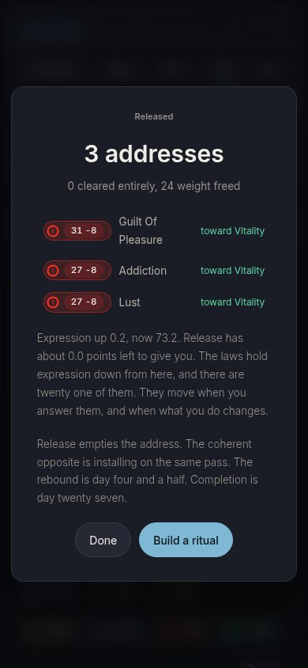</a><figcaption><b>Release.</b> The card a run ends on, phone.</figcaption></figure>
<figure><a href="shots/sofia-protocol-390-5-done.jpg">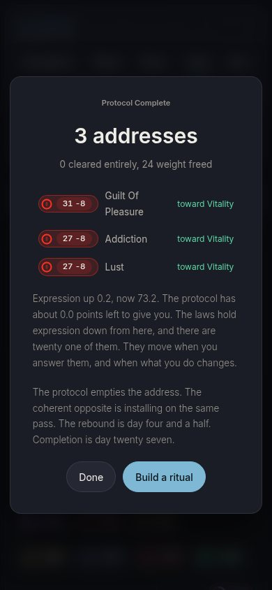</a><figcaption><b>Protocol.</b> The same run, same card.</figcaption></figure>
</div>
<div class="react">
<div class="box"><h3>Reading release</h3><p class="voice">Release is my word. I say it to a client with my hand on their sacrum and I mean something physical: the tissue lets go, the breath drops. &quot;Release empties the address&quot; I could read out in a session.</p><p class="voice">&quot;Nothing released on a worked example.&quot; Exact. Say what did not happen.</p></div>
<div class="box"><h3>Reading protocol</h3><p class="voice">&quot;Run the protocol here. Four channels, twenty five lines.&quot; That one I like, because it tells me what to run and how long. The steps are written beside the word, so the word is earned.</p><p class="voice">&quot;The protocol is complete when the body settles&quot; is wrong. A protocol ends when its steps end. The body settling is a release.</p></div>
</div>
<p class="split"><b>The pattern in the thousand.</b> Release on the sentences about the body. A coin flip on the two buttons. On the finished card she leans protocol, because &quot;Released&quot; over &quot;0 cleared entirely&quot; is a claim she would not make to a client.</p>
<p class="rests"><b>What moves this person most, on file:</b> <span><i>physical</i> draws: Her trade is the body; release is a word she uses with clients in its physical sense.</span> <span><i>sequence</i> draws: &quot;Tell me what to run and how long it takes.&quot; (RESEARCH-icp.md, section 4)</span> <span><i>truth</i> draws: She will repeat it to a client. It has to be true.</span></p>
</section>
<section class="who" id="diane">
<div class="who-hd"><h2>Diane</h2><span class="role">46, founder, second company. ICP.</span>
<span class="tally"><b class="rel-t">6</b> release <b class="pro-t">1</b> protocol <b>5</b> coin flip, of 12</span></div>
<p class="says">"I work until the work is done and the work is never done. Rest feels like a moral failure."</p>
<p class="run">Their own run, on the real build: heaviest <b>Anger</b>, Solar, 6.7. The finished card read "0 cleared entirely, 48 weight freed". Expression up 5.4, now 54.7.</p>
<div class="shots two-up">
<figure><a href="shots/diane-release-390-5-done.jpg">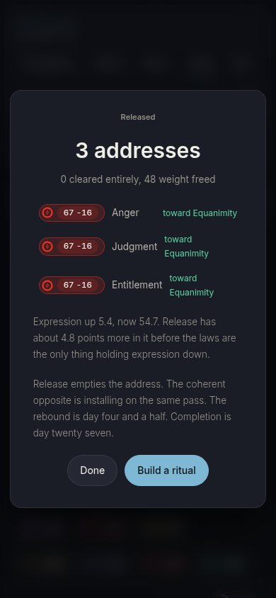</a><figcaption><b>Release.</b> The card a run ends on, phone.</figcaption></figure>
<figure><a href="shots/diane-protocol-390-5-done.jpg">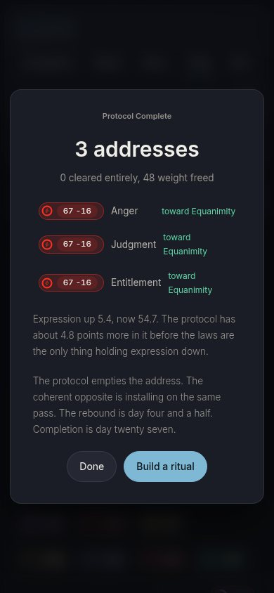</a><figcaption><b>Protocol.</b> The same run, same card.</figcaption></figure>
</div>
<div class="react">
<div class="box"><h3>Reading release</h3><p class="voice">&quot;Two releases at one address.&quot; Fine. I know what I am buying.</p><p class="voice">&quot;Release has about 4.8 points more in it.&quot; That is a cost line. That is what I asked for.</p></div>
<div class="box"><h3>Reading protocol</h3><p class="voice">&quot;Run the protocol.&quot; I have a morning protocol, a sleep protocol and a supplement protocol, and I am behind on all three. The word says I owe it something before I have opened it.</p><p class="voice">The one place it wins is the end card. &quot;Protocol complete&quot; is a box ticked. After &quot;Released&quot; sat over &quot;0 cleared entirely, 48 weight freed&quot;, I trust the box more.</p></div>
</div>
<p class="split"><b>The pattern in the thousand.</b> Release on the cost lines, the tier, the glossary and the refusals. Protocol on the finished card. Everything that hands her an instruction is close, because the obligation in &quot;protocol&quot; costs her about what its order buys.</p>
<p class="rests"><b>What moves this person most, on file:</b> <span><i>obligation</i> pushes: &quot;Does it give me back an hour or does it give me another practice to fail at.&quot; Rest already reads to her as a moral failure; an assignment lands on that.</span> <span><i>truth</i> draws: &quot;A number and a cost.&quot;</span></p>
</section>
<section class="who" id="marcus">
<div class="who-hd"><h2>Marcus</h2><span class="role">44, creative director. ICP.</span>
<span class="tally"><b class="rel-t">11</b> release <b class="pro-t">0</b> protocol <b>1</b> coin flip, of 12</span></div>
<p class="says">"I can see what is wrong with anything in four seconds. It has cost me two studios."</p>
<p class="run">Their own run, on the real build: heaviest <b>Co-Dependency</b>, Sacral, 4.3. The finished card read "0 cleared entirely, 33 weight freed". Expression up 0.6, now 61.5.</p>
<div class="shots two-up">
<figure><a href="shots/marcus-release-390-5-done.jpg">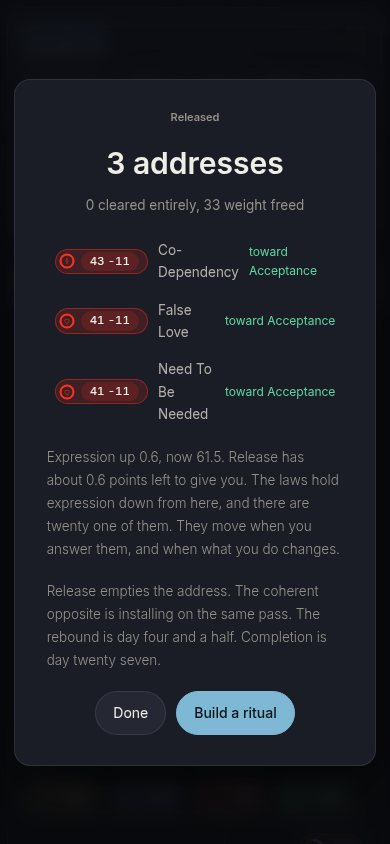</a><figcaption><b>Release.</b> The card a run ends on, phone.</figcaption></figure>
<figure><a href="shots/marcus-protocol-390-5-done.jpg">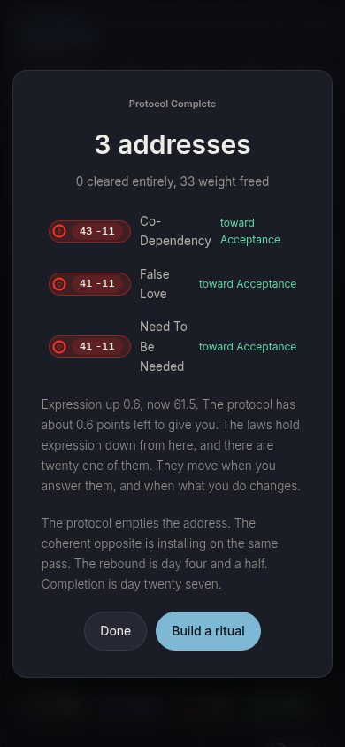</a><figcaption><b>Protocol.</b> The same run, same card.</figcaption></figure>
</div>
<div class="react">
<div class="box"><h3>Reading release</h3><p class="voice">&quot;Release empties the address, replace fills it.&quot; Two verbs, one mechanism, one line. That is a schematic. Release is a valve word. It has a direction.</p><p class="voice">Release on its own is a candle shop. It survives here because every time it appears there is an address, a count or a seat attached to it. Keep it that way or I am gone.</p></div>
<div class="box"><h3>Reading protocol</h3><p class="voice">&quot;The protocol has about 0.6 points left to give you.&quot; A protocol does not run out. This is the word being used to sound like a clinic. Precision as costume, one noun this time.</p><p class="voice">&quot;Protocol complete&quot; I can live with, because it claims nothing. &quot;Released&quot; over &quot;0 cleared entirely&quot; is the one release line I would kill.</p></div>
</div>
<p class="split"><b>The pattern in the thousand.</b> Release on eleven of twelve. The finished card is the one he does not settle, and it is the same reason as Sofia: the eyebrow claims more than the line under it.</p>
<p class="rests"><b>What moves this person most, on file:</b> <span><i>physical</i> draws: &quot;Does it show me the mechanism. I need the schematic.&quot; A mechanism is a physical verb.</span> <span><i>shelf</i> pushes: Reads wellness in four seconds and closes the tab.</span> <span><i>costume</i> pushes: &quot;That is precision as costume.&quot; (RESEARCH-icp.md, section 5, the sharpest break in the study)</span> <span><i>fit</i> draws: Sees a rebuilt sentence in four seconds.</span> <span><i>truth</i> draws: &quot;Give me a claim specific enough to be wrong.&quot;</span></p>
</section>
<section class="who" id="angela">
<div class="who-hd"><h2>Angela</h2><span class="role">36, seeker, six modalities. ICP.</span>
<span class="tally"><b class="rel-t">12</b> release <b class="pro-t">0</b> protocol <b>0</b> coin flip, of 12</span></div>
<p class="says">"Everything happens for a reason. I have said that at three funerals and I believed it each time."</p>
<p class="run">Their own run, on the real build: heaviest <b>Fear</b>, Root, 3.1. The finished card read "0 cleared entirely, 27 weight freed". Expression up 0.2, now 64.4.</p>
<div class="shots two-up">
<figure><a href="shots/angela-release-390-5-done.jpg">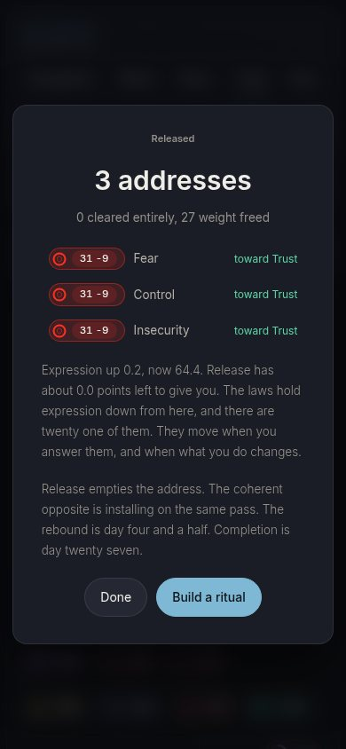</a><figcaption><b>Release.</b> The card a run ends on, phone.</figcaption></figure>
<figure><a href="shots/angela-protocol-390-5-done.jpg">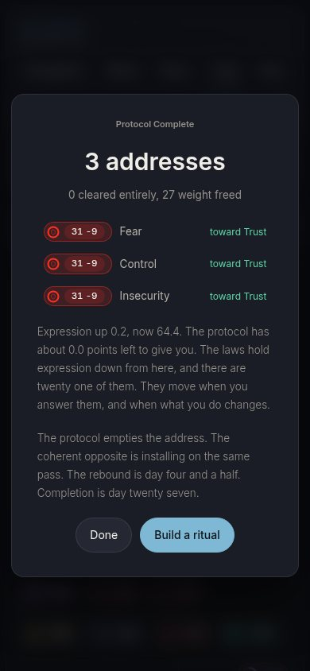</a><figcaption><b>Protocol.</b> The same run, same card.</figcaption></figure>
</div>
<div class="react">
<div class="box"><h3>Reading release</h3><p class="voice">Release is the word every one of my six teachers used. The difference is this one told me where. Fear, lumbar plexus, released. It is the first time the word came with an address.</p><p class="voice">&quot;Released&quot; is the line I would screenshot.</p></div>
<div class="box"><h3>Reading protocol</h3><p class="voice">&quot;Protocol complete&quot; reads like a discharge form from a hospital.</p><p class="voice">&quot;First protocol: Fear.&quot; I have been put on a treatment plan. The last time software gave me one word about myself, I closed it.</p></div>
</div>
<p class="split"><b>The pattern in the thousand.</b> Release on all twelve, in every draw but one of twelve thousand. She is the only one of the six for whom the familiar word is trust. The same familiarity is what the other five hold against it.</p>
<p class="rests"><b>What moves this person most, on file:</b> <span><i>obligation</i> pushes: Walked at a single word once: &quot;It told me I am incoherent. I closed it.&quot; A word that assigns her something is the same shape as a word that grades her.</span> <span><i>clinical</i> pushes: &quot;A moral adjective delivered by software to a person in crisis is a verdict.&quot; Clinical distance reads to her as being processed.</span></p>
</section>
<section class="who" id="derek">
<div class="who-hd"><h2>Derek</h2><span class="role">39, high performer, endurance. ICP.</span>
<span class="tally"><b class="rel-t">0</b> release <b class="pro-t">12</b> protocol <b>0</b> coin flip, of 12</span></div>
<p class="says">"Pain is information. I have raced on a stress fracture. I would do it again."</p>
<p class="run">Their own run, on the real build: heaviest <b>Manipulation Through Emotion</b>, Sacral, 9.5. The finished card read "0 cleared entirely, 62 weight freed". Expression up 5.0, now 40.5.</p>
<div class="shots two-up">
<figure><a href="shots/derek-release-390-5-done.jpg"></a><figcaption><b>Release.</b> The card a run ends on, phone.</figcaption></figure>
<figure><a href="shots/derek-protocol-390-5-done.jpg">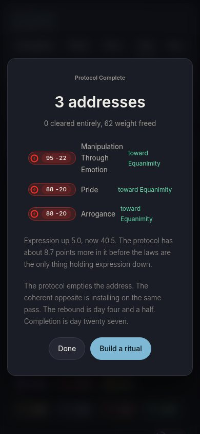</a><figcaption><b>Protocol.</b> The same run, same card.</figcaption></figure>
</div>
<div class="react">
<div class="box"><h3>Reading release</h3><p class="voice">&quot;Run a release&quot; is the chalkboard at a yoga studio. It sounds like a mood.</p><p class="voice">I will give it one thing. &quot;Nothing released on a worked example&quot; is precise.</p></div>
<div class="box"><h3>Reading protocol</h3><p class="voice">Protocol is my word. Training protocol, taper protocol, recovery protocol. It says the set is fixed, and I run fixed sets.</p><p class="voice">&quot;Run the protocol here. Four channels, twenty five lines.&quot; That is an interval session. I would open it tomorrow.</p></div>
</div>
<p class="split"><b>The pattern in the thousand.</b> Protocol on all twelve. He is the whole case for it. Read closely, what he wants is the fixed set, and the fixed set is the line beside the button, &quot;Four channels, twenty five lines&quot;, which ships under either word.</p>
<p class="rests"><b>What moves this person most, on file:</b> <span><i>sequence</i> draws: &quot;Name the one thing capping my output and where it sits. I will train it like anything else.&quot; A training protocol is his native unit.</span> <span><i>shelf</i> pushes: &quot;If my resting rate does not move and my last kilometre does not move, this is a mood.&quot;</span> <span><i>truth</i> draws: Checks the numbers, not the nouns.</span></p>
</section>
<section class="who" id="james">
<div class="who-hd"><h2>James</h2><span class="role">57, C-suite, third turnaround. ICP.</span>
<span class="tally"><b class="rel-t">4</b> release <b class="pro-t">1</b> protocol <b>7</b> coin flip, of 12</span></div>
<p class="says">"I make the call and I sleep fine. People find that cold. It is what they hired."</p>
<p class="run">Their own run, on the real build: heaviest <b>Escapism</b>, Root, 9.3. The finished card read "0 cleared entirely, 66 weight freed". Expression up 1.8, now 34.9.</p>
<div class="shots two-up">
<figure><a href="shots/james-release-390-5-done.jpg">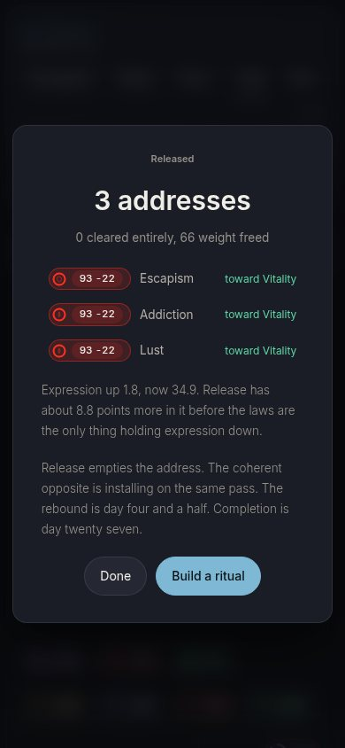</a><figcaption><b>Release.</b> The card a run ends on, phone.</figcaption></figure>
<figure><a href="shots/james-protocol-390-5-done.jpg">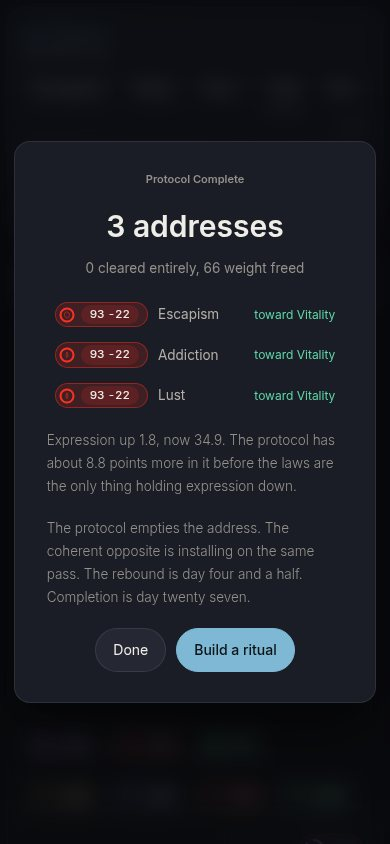</a><figcaption><b>Protocol.</b> The same run, same card.</figcaption></figure>
</div>
<div class="react">
<div class="box"><h3>Reading release</h3><p class="voice">&quot;Release this first: Escapism&quot; in large type is a sentence about me I do not want read over my shoulder. Release is not a word I say in a boardroom.</p><p class="voice">&quot;Nothing released on a worked example&quot; is clean. It states what did not happen.</p></div>
<div class="box"><h3>Reading protocol</h3><p class="voice">I write protocols for other people. Put me on one and I am the patient. &quot;Help implies a deficit.&quot; So does this.</p><p class="voice">&quot;Protocol complete&quot; is a status line and claims nothing about my body. &quot;Released&quot; over &quot;0 cleared entirely, 66 weight freed&quot; is an overstatement, and I find overstatement for a living.</p></div>
</div>
<p class="split"><b>The pattern in the thousand.</b> The swing vote, and mostly a coin flip. Release on the definitions and the refusals. Protocol on the finished card. Protocol is discreet on a screen, which he wants, and it puts him on a regimen, which he refuses. Those two cancel.</p>
<p class="rests"><b>What moves this person most, on file:</b> <span><i>obligation</i> pushes: &quot;Help implies a deficit. Ask me instead what it improves.&quot; Being put on a protocol is being a patient.</span> <span><i>shelf</i> pushes: Level 3, defended. A wellness word ends it.</span> <span><i>discreet</i> draws: &quot;I will not open that on a plane, or in my office with the door open.&quot; (DD panel)</span> <span><i>fit</i> draws: Reads board papers.</span> <span><i>truth</i> draws: &quot;I make calls for a living.&quot;</span></p>
</section>

<h2>The five screens, both words, side by side</h2>
<p>James, on a phone. The build is untouched; only the words are swapped on the rendered page. In both versions the Summary card the build titles "The protocol", which names a practice, reads "The practice", so neither word is handicapped by a collision the other escapes.</p>
<div class="sbs"><h3>Summary, the output row</h3><div class="shots two-up">
<figure><a href="shots/james-release-390-1-summary.jpg">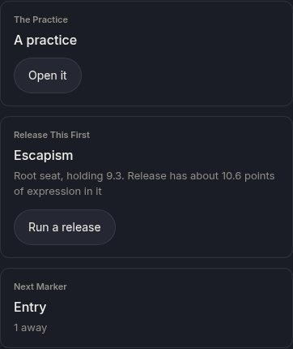</a><figcaption><b>Release</b>, 390</figcaption></figure>
<figure><a href="shots/james-protocol-390-1-summary.jpg">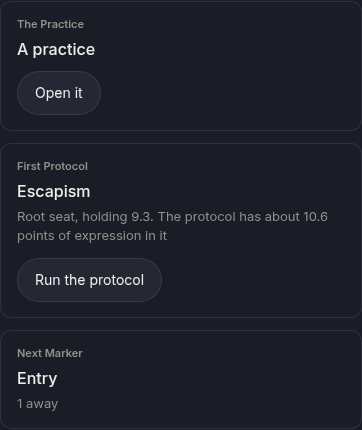</a><figcaption><b>Protocol</b>, 390</figcaption></figure>
</div></div><div class="sbs"><h3>The address card, heaviest address</h3><div class="shots two-up">
<figure><a href="shots/james-release-390-2-address.jpg">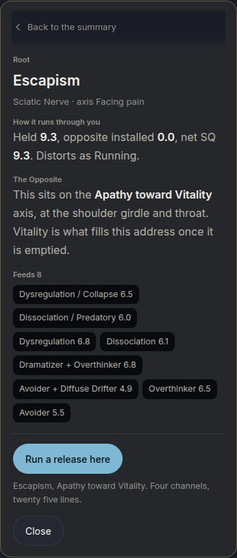</a><figcaption><b>Release</b>, 390</figcaption></figure>
<figure><a href="shots/james-protocol-390-2-address.jpg">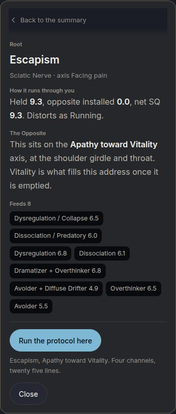</a><figcaption><b>Protocol</b>, 390</figcaption></figure>
</div></div><div class="sbs"><h3>The address card, nothing held</h3><div class="shots two-up">
<figure><a href="shots/james-release-390-3-refusal.jpg">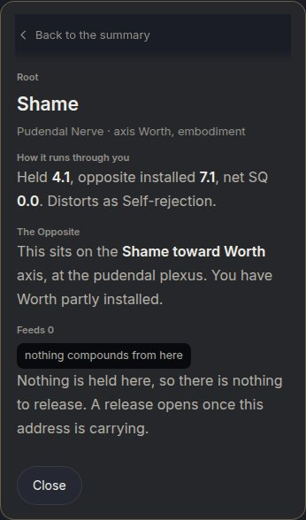</a><figcaption><b>Release</b>, 390</figcaption></figure>
<figure><a href="shots/james-protocol-390-3-refusal.jpg">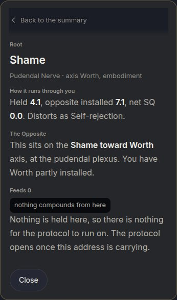</a><figcaption><b>Protocol</b>, 390</figcaption></figure>
</div></div><div class="sbs"><h3>The run card, before Begin</h3><div class="shots two-up">
<figure><a href="shots/james-release-390-4-pick.jpg">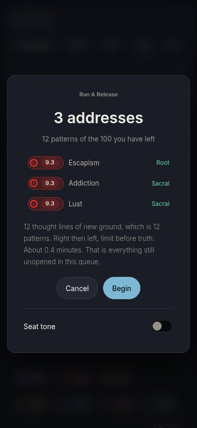</a><figcaption><b>Release</b>, 390</figcaption></figure>
<figure><a href="shots/james-protocol-390-4-pick.jpg">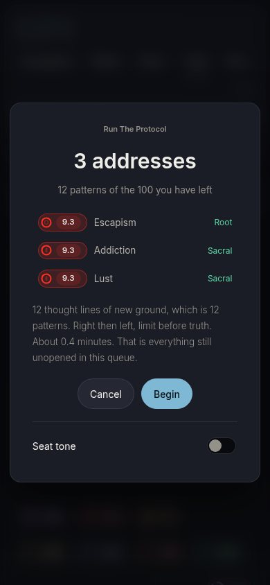</a><figcaption><b>Protocol</b>, 390</figcaption></figure>
</div></div><div class="sbs"><h3>The run card, finished</h3><div class="shots two-up">
<figure><a href="shots/james-release-390-5-done.jpg"></a><figcaption><b>Release</b>, 390</figcaption></figure>
<figure><a href="shots/james-protocol-390-5-done.jpg"></a><figcaption><b>Protocol</b>, 390</figcaption></figure>
</div></div>

<h2>The twelve strings</h2>
<p>Each string quoted as it ships, with where it ships. The bars are the thousand draws per persona: the blue share is release.</p>

<section class="str" id="s-button">
<div class="str-hd"><span class="bk">Menu</span><code>ui/summary.js:651, ui/storyui.js:189, eyebrow at ui/release.js:353</code><span class="ship">ships as release</span></div>
<div class="pair">
<div class="form rel"><span class="wl">Release</span><p>Run a release</p></div>
<div class="form pro"><span class="wl">Protocol</span><p>Run the protocol</p></div>
</div>
<p class="why">The primary action on Summary and on Story. Nothing beside the button says what the sequence is.</p>
<div class="bars"><div class="b"><span>Sofia</span><i><em class="coin" style="width:61.6%"></em></i><b class="num">616</b></div><div class="b"><span>Diane</span><i><em class="coin" style="width:44.5%"></em></i><b class="num">445</b></div><div class="b"><span>Marcus</span><i><em class="rel" style="width:78.9%"></em></i><b class="num">789</b></div><div class="b"><span>Angela</span><i><em class="rel" style="width:100.0%"></em></i><b class="num">1000</b></div><div class="b"><span>Derek</span><i><em class="pro" style="width:1.6%"></em></i><b class="num">16</b></div><div class="b"><span>James</span><i><em class="coin" style="width:38.7%"></em></i><b class="num">387</b></div></div>
<details><summary>The scores this rests on</summary><div class="wrap"><table class="sc"><tr><th></th><th title="names a physical event with mass and direction (the house rule: physical metaphors only)">physical</th><th title="signals a fixed, specified series of steps">sequence</th><th title="reads as an assignment: you need to do this">obligation</th><th title="echoes the wellness shelf, where this word is sold as a feeling">shelf</th><th title="reads as medical or institutional, done to a patient">clinical</th><th title="claims a formality or precision the sentence does not carry">costume</th><th title="gives nothing away to somebody glancing at the screen">discreet</th><th title="reads as the sentence it replaces, without a rewrite">fit</th><th title="still says exactly what the engine does (pass one, which beats every other)">truth</th></tr>
<tr><td>Release</td><td class="num">2</td><td class="num">0.5</td><td class="num">0.5</td><td class="num">1.5</td><td class="num">0</td><td class="num">0</td><td class="num">0.5</td><td class="num">2</td><td class="num">2</td></tr>
<tr><td>Protocol</td><td class="num">0</td><td class="num">2</td><td class="num">1.5</td><td class="num">0</td><td class="num">1.5</td><td class="num">0.5</td><td class="num">1.5</td><td class="num">2</td><td class="num">2</td></tr></table></div></details>
</section>
<section class="str" id="s-first">
<div class="str-hd"><span class="bk">Label</span><code>ui/summary.js:648</code><span class="ship">ships as release</span></div>
<div class="pair">
<div class="form rel"><span class="wl">Release</span><p>Release this first</p></div>
<div class="form pro"><span class="wl">Protocol</span><p>First protocol</p></div>
</div>
<p class="why">Eyebrow over the heaviest address on Summary. The P form has no verb to carry the imperative, so it reads as if the address were the protocol's name.</p>
<div class="bars"><div class="b"><span>Sofia</span><i><em class="rel" style="width:90.5%"></em></i><b class="num">905</b></div><div class="b"><span>Diane</span><i><em class="rel" style="width:76.4%"></em></i><b class="num">764</b></div><div class="b"><span>Marcus</span><i><em class="rel" style="width:97.5%"></em></i><b class="num">975</b></div><div class="b"><span>Angela</span><i><em class="rel" style="width:100.0%"></em></i><b class="num">1000</b></div><div class="b"><span>Derek</span><i><em class="pro" style="width:22.4%"></em></i><b class="num">224</b></div><div class="b"><span>James</span><i><em class="rel" style="width:76.3%"></em></i><b class="num">763</b></div></div>
<details><summary>The scores this rests on</summary><div class="wrap"><table class="sc"><tr><th></th><th title="names a physical event with mass and direction (the house rule: physical metaphors only)">physical</th><th title="signals a fixed, specified series of steps">sequence</th><th title="reads as an assignment: you need to do this">obligation</th><th title="echoes the wellness shelf, where this word is sold as a feeling">shelf</th><th title="reads as medical or institutional, done to a patient">clinical</th><th title="claims a formality or precision the sentence does not carry">costume</th><th title="gives nothing away to somebody glancing at the screen">discreet</th><th title="reads as the sentence it replaces, without a rewrite">fit</th><th title="still says exactly what the engine does (pass one, which beats every other)">truth</th></tr>
<tr><td>Release</td><td class="num">2</td><td class="num">0.5</td><td class="num">1</td><td class="num">1.5</td><td class="num">0</td><td class="num">0</td><td class="num">0.5</td><td class="num">2</td><td class="num">2</td></tr>
<tr><td>Protocol</td><td class="num">0</td><td class="num">2</td><td class="num">1.5</td><td class="num">0</td><td class="num">1.5</td><td class="num">1</td><td class="num">1.5</td><td class="num">1</td><td class="num">1</td></tr></table></div></details>
</section>
<section class="str" id="s-here">
<div class="str-hd"><span class="bk">Instruction</span><code>ui/drills.js:268 and :445</code><span class="ship">ships as protocol</span></div>
<div class="pair">
<div class="form rel"><span class="wl">Release</span><p>Run a release here. Four channels, twenty five lines.</p></div>
<div class="form pro"><span class="wl">Protocol</span><p>Run the protocol here. Four channels, twenty five lines.</p></div>
</div>
<p class="why">The address card button. The line beside it states the sequence, so &quot;protocol&quot; is earned here: it names a thing that is exactly specified.</p>
<div class="bars"><div class="b"><span>Sofia</span><i><em class="coin" style="width:69.0%"></em></i><b class="num">690</b></div><div class="b"><span>Diane</span><i><em class="coin" style="width:51.3%"></em></i><b class="num">513</b></div><div class="b"><span>Marcus</span><i><em class="rel" style="width:72.9%"></em></i><b class="num">729</b></div><div class="b"><span>Angela</span><i><em class="rel" style="width:100.0%"></em></i><b class="num">1000</b></div><div class="b"><span>Derek</span><i><em class="pro" style="width:2.9%"></em></i><b class="num">29</b></div><div class="b"><span>James</span><i><em class="coin" style="width:37.8%"></em></i><b class="num">378</b></div></div>
<details><summary>The scores this rests on</summary><div class="wrap"><table class="sc"><tr><th></th><th title="names a physical event with mass and direction (the house rule: physical metaphors only)">physical</th><th title="signals a fixed, specified series of steps">sequence</th><th title="reads as an assignment: you need to do this">obligation</th><th title="echoes the wellness shelf, where this word is sold as a feeling">shelf</th><th title="reads as medical or institutional, done to a patient">clinical</th><th title="claims a formality or precision the sentence does not carry">costume</th><th title="gives nothing away to somebody glancing at the screen">discreet</th><th title="reads as the sentence it replaces, without a rewrite">fit</th><th title="still says exactly what the engine does (pass one, which beats every other)">truth</th></tr>
<tr><td>Release</td><td class="num">2</td><td class="num">1</td><td class="num">0.5</td><td class="num">1.5</td><td class="num">0</td><td class="num">0</td><td class="num">0.5</td><td class="num">2</td><td class="num">2</td></tr>
<tr><td>Protocol</td><td class="num">0</td><td class="num">2</td><td class="num">1.5</td><td class="num">0</td><td class="num">1.5</td><td class="num">0</td><td class="num">1.5</td><td class="num">2</td><td class="num">2</td></tr></table></div></details>
</section>
<section class="str" id="s-nothing">
<div class="str-hd"><span class="bk">Refusal</span><code>ui/drills.js:272 to :273</code><span class="ship">ships as both, in one string</span></div>
<div class="pair">
<div class="form rel"><span class="wl">Release</span><p>Nothing is held here, so there is nothing to release. A release opens once this address is carrying.</p></div>
<div class="form pro"><span class="wl">Protocol</span><p>Nothing is held here, so there is nothing for the protocol to run on. The protocol opens once this address is carrying.</p></div>
</div>
<p class="why">Ships today with both words in one refusal. Protocol has no verb, so &quot;nothing to release&quot; has to be rebuilt.</p>
<div class="bars"><div class="b"><span>Sofia</span><i><em class="rel" style="width:80.1%"></em></i><b class="num">801</b></div><div class="b"><span>Diane</span><i><em class="coin" style="width:64.3%"></em></i><b class="num">643</b></div><div class="b"><span>Marcus</span><i><em class="rel" style="width:92.8%"></em></i><b class="num">928</b></div><div class="b"><span>Angela</span><i><em class="rel" style="width:100.0%"></em></i><b class="num">1000</b></div><div class="b"><span>Derek</span><i><em class="pro" style="width:6.4%"></em></i><b class="num">64</b></div><div class="b"><span>James</span><i><em class="coin" style="width:63.9%"></em></i><b class="num">639</b></div></div>
<details><summary>The scores this rests on</summary><div class="wrap"><table class="sc"><tr><th></th><th title="names a physical event with mass and direction (the house rule: physical metaphors only)">physical</th><th title="signals a fixed, specified series of steps">sequence</th><th title="reads as an assignment: you need to do this">obligation</th><th title="echoes the wellness shelf, where this word is sold as a feeling">shelf</th><th title="reads as medical or institutional, done to a patient">clinical</th><th title="claims a formality or precision the sentence does not carry">costume</th><th title="gives nothing away to somebody glancing at the screen">discreet</th><th title="reads as the sentence it replaces, without a rewrite">fit</th><th title="still says exactly what the engine does (pass one, which beats every other)">truth</th></tr>
<tr><td>Release</td><td class="num">2</td><td class="num">0.5</td><td class="num">0.5</td><td class="num">1.5</td><td class="num">0</td><td class="num">0</td><td class="num">0.5</td><td class="num">2</td><td class="num">2</td></tr>
<tr><td>Protocol</td><td class="num">0</td><td class="num">2</td><td class="num">1.5</td><td class="num">0</td><td class="num">1.5</td><td class="num">1</td><td class="num">1.5</td><td class="num">1</td><td class="num">2</td></tr></table></div></details>
</section>
<section class="str" id="s-imprints">
<div class="str-hd"><span class="bk">Menu</span><code>ui/imprints.js:239</code><span class="ship">ships as release</span></div>
<div class="pair">
<div class="form rel"><span class="wl">Release</span><p>Release 3</p></div>
<div class="form pro"><span class="wl">Protocol</span><p>Run protocol 3</p></div>
</div>
<p class="why">Menus are one word, and the word says what the control does. A noun cannot be that word.</p>
<div class="bars"><div class="b"><span>Sofia</span><i><em class="rel" style="width:82.3%"></em></i><b class="num">823</b></div><div class="b"><span>Diane</span><i><em class="coin" style="width:57.9%"></em></i><b class="num">579</b></div><div class="b"><span>Marcus</span><i><em class="rel" style="width:95.9%"></em></i><b class="num">959</b></div><div class="b"><span>Angela</span><i><em class="rel" style="width:100.0%"></em></i><b class="num">1000</b></div><div class="b"><span>Derek</span><i><em class="pro" style="width:10.4%"></em></i><b class="num">104</b></div><div class="b"><span>James</span><i><em class="coin" style="width:66.5%"></em></i><b class="num">665</b></div></div>
<details><summary>The scores this rests on</summary><div class="wrap"><table class="sc"><tr><th></th><th title="names a physical event with mass and direction (the house rule: physical metaphors only)">physical</th><th title="signals a fixed, specified series of steps">sequence</th><th title="reads as an assignment: you need to do this">obligation</th><th title="echoes the wellness shelf, where this word is sold as a feeling">shelf</th><th title="reads as medical or institutional, done to a patient">clinical</th><th title="claims a formality or precision the sentence does not carry">costume</th><th title="gives nothing away to somebody glancing at the screen">discreet</th><th title="reads as the sentence it replaces, without a rewrite">fit</th><th title="still says exactly what the engine does (pass one, which beats every other)">truth</th></tr>
<tr><td>Release</td><td class="num">2</td><td class="num">0.5</td><td class="num">1</td><td class="num">1.5</td><td class="num">0</td><td class="num">0</td><td class="num">0.5</td><td class="num">2</td><td class="num">2</td></tr>
<tr><td>Protocol</td><td class="num">0</td><td class="num">2</td><td class="num">1.5</td><td class="num">0</td><td class="num">1.5</td><td class="num">1</td><td class="num">1.5</td><td class="num">0.5</td><td class="num">2</td></tr></table></div></details>
</section>
<section class="str" id="s-done">
<div class="str-hd"><span class="bk">Label</span><code>ui/release.js:305</code><span class="ship">ships as release</span></div>
<div class="pair">
<div class="form rel"><span class="wl">Release</span><p>Released</p></div>
<div class="form pro"><span class="wl">Protocol</span><p>Protocol complete</p></div>
</div>
<p class="why">The eyebrow on the card a run ends on, above &quot;0 cleared entirely, 66 weight freed&quot; for James. &quot;Released&quot; states a body event the instrument did not observe. &quot;Protocol complete&quot; states only what the software knows.</p>
<div class="bars"><div class="b"><span>Sofia</span><i><em class="coin" style="width:32.3%"></em></i><b class="num">323</b></div><div class="b"><span>Diane</span><i><em class="pro" style="width:3.9%"></em></i><b class="num">39</b></div><div class="b"><span>Marcus</span><i><em class="coin" style="width:35.3%"></em></i><b class="num">353</b></div><div class="b"><span>Angela</span><i><em class="rel" style="width:99.9%"></em></i><b class="num">999</b></div><div class="b"><span>Derek</span><i><em class="pro" style="width:2.7%"></em></i><b class="num">27</b></div><div class="b"><span>James</span><i><em class="pro" style="width:5.3%"></em></i><b class="num">53</b></div></div>
<details><summary>The scores this rests on</summary><div class="wrap"><table class="sc"><tr><th></th><th title="names a physical event with mass and direction (the house rule: physical metaphors only)">physical</th><th title="signals a fixed, specified series of steps">sequence</th><th title="reads as an assignment: you need to do this">obligation</th><th title="echoes the wellness shelf, where this word is sold as a feeling">shelf</th><th title="reads as medical or institutional, done to a patient">clinical</th><th title="claims a formality or precision the sentence does not carry">costume</th><th title="gives nothing away to somebody glancing at the screen">discreet</th><th title="reads as the sentence it replaces, without a rewrite">fit</th><th title="still says exactly what the engine does (pass one, which beats every other)">truth</th></tr>
<tr><td>Release</td><td class="num">2</td><td class="num">0.5</td><td class="num">0.5</td><td class="num">1.5</td><td class="num">0</td><td class="num">0</td><td class="num">0.5</td><td class="num">2</td><td class="num">1</td></tr>
<tr><td>Protocol</td><td class="num">0</td><td class="num">2</td><td class="num">0.5</td><td class="num">0</td><td class="num">1.5</td><td class="num">0</td><td class="num">1.5</td><td class="num">1.5</td><td class="num">2</td></tr></table></div></details>
</section>
<section class="str" id="s-empties">
<div class="str-hd"><span class="bk">Definition</span><code>ui/release.js:337, ui/drills.js:200, ui/games.js:124</code><span class="ship">ships as release</span></div>
<div class="pair">
<div class="form rel"><span class="wl">Release</span><p>Release empties the address. The coherent opposite is installing on the same pass.</p></div>
<div class="form pro"><span class="wl">Protocol</span><p>The protocol empties the address. The coherent opposite is installing on the same pass.</p></div>
</div>
<p class="why">The mechanism in one line. Release is mechanic one of two; the protocol is both. Swapping the word makes the protocol do half of itself.</p>
<div class="bars"><div class="b"><span>Sofia</span><i><em class="rel" style="width:81.3%"></em></i><b class="num">813</b></div><div class="b"><span>Diane</span><i><em class="coin" style="width:64.9%"></em></i><b class="num">649</b></div><div class="b"><span>Marcus</span><i><em class="rel" style="width:96.6%"></em></i><b class="num">966</b></div><div class="b"><span>Angela</span><i><em class="rel" style="width:100.0%"></em></i><b class="num">1000</b></div><div class="b"><span>Derek</span><i><em class="pro" style="width:6.2%"></em></i><b class="num">62</b></div><div class="b"><span>James</span><i><em class="coin" style="width:62.8%"></em></i><b class="num">628</b></div></div>
<details><summary>The scores this rests on</summary><div class="wrap"><table class="sc"><tr><th></th><th title="names a physical event with mass and direction (the house rule: physical metaphors only)">physical</th><th title="signals a fixed, specified series of steps">sequence</th><th title="reads as an assignment: you need to do this">obligation</th><th title="echoes the wellness shelf, where this word is sold as a feeling">shelf</th><th title="reads as medical or institutional, done to a patient">clinical</th><th title="claims a formality or precision the sentence does not carry">costume</th><th title="gives nothing away to somebody glancing at the screen">discreet</th><th title="reads as the sentence it replaces, without a rewrite">fit</th><th title="still says exactly what the engine does (pass one, which beats every other)">truth</th></tr>
<tr><td>Release</td><td class="num">2</td><td class="num">0.5</td><td class="num">0.5</td><td class="num">1.5</td><td class="num">0</td><td class="num">0</td><td class="num">0.5</td><td class="num">2</td><td class="num">2</td></tr>
<tr><td>Protocol</td><td class="num">0</td><td class="num">2</td><td class="num">1.5</td><td class="num">0</td><td class="num">1.5</td><td class="num">1.5</td><td class="num">1.5</td><td class="num">2</td><td class="num">1.5</td></tr></table></div></details>
</section>
<section class="str" id="s-left">
<div class="str-hd"><span class="bk">Reading</span><code>ui/release.js:331</code><span class="ship">ships as release</span></div>
<div class="pair">
<div class="form rel"><span class="wl">Release</span><p>Release has about 1.2 points left to give you. The laws hold expression down from here.</p></div>
<div class="form pro"><span class="wl">Protocol</span><p>The protocol has about 1.2 points left to give you. The laws hold expression down from here.</p></div>
</div>
<p class="why">The headroom is a property of discharge on the shadow. A protocol does not run out; what it can still discharge does.</p>
<div class="bars"><div class="b"><span>Sofia</span><i><em class="rel" style="width:85.0%"></em></i><b class="num">850</b></div><div class="b"><span>Diane</span><i><em class="rel" style="width:72.9%"></em></i><b class="num">729</b></div><div class="b"><span>Marcus</span><i><em class="rel" style="width:96.5%"></em></i><b class="num">965</b></div><div class="b"><span>Angela</span><i><em class="rel" style="width:100.0%"></em></i><b class="num">1000</b></div><div class="b"><span>Derek</span><i><em class="pro" style="width:8.9%"></em></i><b class="num">89</b></div><div class="b"><span>James</span><i><em class="rel" style="width:70.0%"></em></i><b class="num">700</b></div></div>
<details><summary>The scores this rests on</summary><div class="wrap"><table class="sc"><tr><th></th><th title="names a physical event with mass and direction (the house rule: physical metaphors only)">physical</th><th title="signals a fixed, specified series of steps">sequence</th><th title="reads as an assignment: you need to do this">obligation</th><th title="echoes the wellness shelf, where this word is sold as a feeling">shelf</th><th title="reads as medical or institutional, done to a patient">clinical</th><th title="claims a formality or precision the sentence does not carry">costume</th><th title="gives nothing away to somebody glancing at the screen">discreet</th><th title="reads as the sentence it replaces, without a rewrite">fit</th><th title="still says exactly what the engine does (pass one, which beats every other)">truth</th></tr>
<tr><td>Release</td><td class="num">2</td><td class="num">0.5</td><td class="num">0.5</td><td class="num">1.5</td><td class="num">0</td><td class="num">0</td><td class="num">0.5</td><td class="num">2</td><td class="num">2</td></tr>
<tr><td>Protocol</td><td class="num">0</td><td class="num">2</td><td class="num">1.5</td><td class="num">0</td><td class="num">1.5</td><td class="num">1.5</td><td class="num">1.5</td><td class="num">1.5</td><td class="num">1.5</td></tr></table></div></details>
</section>
<section class="str" id="s-worked">
<div class="str-hd"><span class="bk">Refusal</span><code>ui/release.js:130</code><span class="ship">ships as release</span></div>
<div class="pair">
<div class="form rel"><span class="wl">Release</span><p>Nothing released on a worked example.</p></div>
<div class="form pro"><span class="wl">Protocol</span><p>No protocol runs on a worked example.</p></div>
</div>
<p class="why">The run on a worked example does walk every line to the end, and then refuses to write. &quot;No protocol runs&quot; is false. &quot;Nothing released&quot; is exact.</p>
<div class="bars"><div class="b"><span>Sofia</span><i><em class="rel" style="width:82.4%"></em></i><b class="num">824</b></div><div class="b"><span>Diane</span><i><em class="rel" style="width:76.1%"></em></i><b class="num">761</b></div><div class="b"><span>Marcus</span><i><em class="rel" style="width:96.3%"></em></i><b class="num">963</b></div><div class="b"><span>Angela</span><i><em class="rel" style="width:100.0%"></em></i><b class="num">1000</b></div><div class="b"><span>Derek</span><i><em class="pro" style="width:11.6%"></em></i><b class="num">116</b></div><div class="b"><span>James</span><i><em class="coin" style="width:68.1%"></em></i><b class="num">681</b></div></div>
<details><summary>The scores this rests on</summary><div class="wrap"><table class="sc"><tr><th></th><th title="names a physical event with mass and direction (the house rule: physical metaphors only)">physical</th><th title="signals a fixed, specified series of steps">sequence</th><th title="reads as an assignment: you need to do this">obligation</th><th title="echoes the wellness shelf, where this word is sold as a feeling">shelf</th><th title="reads as medical or institutional, done to a patient">clinical</th><th title="claims a formality or precision the sentence does not carry">costume</th><th title="gives nothing away to somebody glancing at the screen">discreet</th><th title="reads as the sentence it replaces, without a rewrite">fit</th><th title="still says exactly what the engine does (pass one, which beats every other)">truth</th></tr>
<tr><td>Release</td><td class="num">2</td><td class="num">0.5</td><td class="num">0.5</td><td class="num">1.5</td><td class="num">0</td><td class="num">0</td><td class="num">0.5</td><td class="num">2</td><td class="num">2</td></tr>
<tr><td>Protocol</td><td class="num">0</td><td class="num">2</td><td class="num">1.5</td><td class="num">0</td><td class="num">1.5</td><td class="num">1</td><td class="num">1.5</td><td class="num">2</td><td class="num">1</td></tr></table></div></details>
</section>
<section class="str" id="s-gloss">
<div class="str-hd"><span class="bk">Definition</span><code>engine/data/kb.js:19, the glossary entry</code><span class="ship">ships as release</span></div>
<div class="pair">
<div class="form rel"><span class="wl">Release</span><p>Release. The discharge of stored charge through the nervous system. Physical and observable: heat, shaking, tears, breath shifts. The pattern loses its power source.</p></div>
<div class="form pro"><span class="wl">Protocol</span><p>Protocol. The sequence that discharges stored charge through the nervous system. Physical and observable: heat, shaking, tears, breath shifts. The pattern loses its power source.</p></div>
</div>
<p class="why">A protocol cannot be a discharge, so the definition has to change its subject, and &quot;physical and observable&quot; then describes a list of steps.</p>
<div class="bars"><div class="b"><span>Sofia</span><i><em class="rel" style="width:95.3%"></em></i><b class="num">953</b></div><div class="b"><span>Diane</span><i><em class="rel" style="width:89.1%"></em></i><b class="num">891</b></div><div class="b"><span>Marcus</span><i><em class="rel" style="width:99.3%"></em></i><b class="num">993</b></div><div class="b"><span>Angela</span><i><em class="rel" style="width:100.0%"></em></i><b class="num">1000</b></div><div class="b"><span>Derek</span><i><em class="pro" style="width:21.1%"></em></i><b class="num">211</b></div><div class="b"><span>James</span><i><em class="rel" style="width:86.5%"></em></i><b class="num">865</b></div></div>
<details><summary>The scores this rests on</summary><div class="wrap"><table class="sc"><tr><th></th><th title="names a physical event with mass and direction (the house rule: physical metaphors only)">physical</th><th title="signals a fixed, specified series of steps">sequence</th><th title="reads as an assignment: you need to do this">obligation</th><th title="echoes the wellness shelf, where this word is sold as a feeling">shelf</th><th title="reads as medical or institutional, done to a patient">clinical</th><th title="claims a formality or precision the sentence does not carry">costume</th><th title="gives nothing away to somebody glancing at the screen">discreet</th><th title="reads as the sentence it replaces, without a rewrite">fit</th><th title="still says exactly what the engine does (pass one, which beats every other)">truth</th></tr>
<tr><td>Release</td><td class="num">2</td><td class="num">0.5</td><td class="num">0.5</td><td class="num">1.5</td><td class="num">0</td><td class="num">0</td><td class="num">0.5</td><td class="num">2</td><td class="num">2</td></tr>
<tr><td>Protocol</td><td class="num">0</td><td class="num">2</td><td class="num">1.5</td><td class="num">0</td><td class="num">1.5</td><td class="num">2</td><td class="num">1.5</td><td class="num">1</td><td class="num">1</td></tr></table></div></details>
</section>
<section class="str" id="s-settles">
<div class="str-hd"><span class="bk">Instruction</span><code>engine/data/cards.js:266</code><span class="ship">ships as release</span></div>
<div class="pair">
<div class="form rel"><span class="wl">Release</span><p>The release is complete when the body settles. Breath deepens. Vision may clear. That is the signal.</p></div>
<div class="form pro"><span class="wl">Protocol</span><p>The protocol is complete when the body settles. Breath deepens. Vision may clear. That is the signal.</p></div>
</div>
<p class="why">The end condition is bodily. The shipped protocol ends after its lines whatever the body does, so the P form promises a stop rule the product does not have.</p>
<div class="bars"><div class="b"><span>Sofia</span><i><em class="rel" style="width:90.7%"></em></i><b class="num">907</b></div><div class="b"><span>Diane</span><i><em class="rel" style="width:80.3%"></em></i><b class="num">803</b></div><div class="b"><span>Marcus</span><i><em class="rel" style="width:98.5%"></em></i><b class="num">985</b></div><div class="b"><span>Angela</span><i><em class="rel" style="width:100.0%"></em></i><b class="num">1000</b></div><div class="b"><span>Derek</span><i><em class="pro" style="width:12.7%"></em></i><b class="num">127</b></div><div class="b"><span>James</span><i><em class="rel" style="width:77.2%"></em></i><b class="num">772</b></div></div>
<details><summary>The scores this rests on</summary><div class="wrap"><table class="sc"><tr><th></th><th title="names a physical event with mass and direction (the house rule: physical metaphors only)">physical</th><th title="signals a fixed, specified series of steps">sequence</th><th title="reads as an assignment: you need to do this">obligation</th><th title="echoes the wellness shelf, where this word is sold as a feeling">shelf</th><th title="reads as medical or institutional, done to a patient">clinical</th><th title="claims a formality or precision the sentence does not carry">costume</th><th title="gives nothing away to somebody glancing at the screen">discreet</th><th title="reads as the sentence it replaces, without a rewrite">fit</th><th title="still says exactly what the engine does (pass one, which beats every other)">truth</th></tr>
<tr><td>Release</td><td class="num">2</td><td class="num">0.5</td><td class="num">0.5</td><td class="num">1.5</td><td class="num">0</td><td class="num">0</td><td class="num">0.5</td><td class="num">2</td><td class="num">2</td></tr>
<tr><td>Protocol</td><td class="num">0</td><td class="num">2</td><td class="num">1.5</td><td class="num">0</td><td class="num">1.5</td><td class="num">2</td><td class="num">1.5</td><td class="num">2</td><td class="num">1</td></tr></table></div></details>
</section>
<section class="str" id="s-plan">
<div class="str-hd"><span class="bk">Definition</span><code>engine/plan.js:53, the free tier</code><span class="ship">ships as release</span></div>
<div class="pair">
<div class="form rel"><span class="wl">Release</span><p>Ten patterns a week, for life. Two releases at one address, and unlimited rerunning of anything already open.</p></div>
<div class="form pro"><span class="wl">Protocol</span><p>Ten patterns a week, for life. Two protocols at one address, and unlimited rerunning of anything already open.</p></div>
</div>
<p class="why">Paywall copy. &quot;Two protocols at one address&quot; reads as two different regimens, and a regimen sold by the week reads as a prescription.</p>
<div class="bars"><div class="b"><span>Sofia</span><i><em class="rel" style="width:79.1%"></em></i><b class="num">791</b></div><div class="b"><span>Diane</span><i><em class="rel" style="width:73.0%"></em></i><b class="num">730</b></div><div class="b"><span>Marcus</span><i><em class="rel" style="width:91.9%"></em></i><b class="num">919</b></div><div class="b"><span>Angela</span><i><em class="rel" style="width:100.0%"></em></i><b class="num">1000</b></div><div class="b"><span>Derek</span><i><em class="pro" style="width:4.1%"></em></i><b class="num">41</b></div><div class="b"><span>James</span><i><em class="coin" style="width:66.3%"></em></i><b class="num">663</b></div></div>
<details><summary>The scores this rests on</summary><div class="wrap"><table class="sc"><tr><th></th><th title="names a physical event with mass and direction (the house rule: physical metaphors only)">physical</th><th title="signals a fixed, specified series of steps">sequence</th><th title="reads as an assignment: you need to do this">obligation</th><th title="echoes the wellness shelf, where this word is sold as a feeling">shelf</th><th title="reads as medical or institutional, done to a patient">clinical</th><th title="claims a formality or precision the sentence does not carry">costume</th><th title="gives nothing away to somebody glancing at the screen">discreet</th><th title="reads as the sentence it replaces, without a rewrite">fit</th><th title="still says exactly what the engine does (pass one, which beats every other)">truth</th></tr>
<tr><td>Release</td><td class="num">2</td><td class="num">0.5</td><td class="num">0.5</td><td class="num">1.5</td><td class="num">0</td><td class="num">0</td><td class="num">0.5</td><td class="num">2</td><td class="num">2</td></tr>
<tr><td>Protocol</td><td class="num">0</td><td class="num">2</td><td class="num">2</td><td class="num">0</td><td class="num">1.5</td><td class="num">1</td><td class="num">1.5</td><td class="num">2</td><td class="num">1.5</td></tr></table></div></details>
</section>

<h2>Measured, and not a matter of taste</h2>
<h3>Where the two words stand in the build today</h3>
<p>Every string literal a person can read, in <code>ui/</code> and in the data tables the renderers print, with comments stripped first. 107 occurrences: release 92, protocol 15.</p>
<div class="wrap"><table>
<tr><th>Release, by the job it does</th><th class="num">Count</th><th>Can protocol stand there</th></tr>
<tr><td>noun, the event</td><td class="num">47</td><td>Grammatically, yes. The meaning moves from what the body does to the steps.</td></tr><tr><td>verb</td><td class="num">29</td><td>No. The sentence has to be rebuilt.</td></tr><tr><td>past participle or state</td><td class="num">5</td><td>No. The sentence has to be rebuilt.</td></tr><tr><td>verb, ongoing</td><td class="num">5</td><td>No. The sentence has to be rebuilt.</td></tr><tr><td>adjective</td><td class="num">1</td><td>No. The sentence has to be rebuilt.</td></tr><tr><td>modifier of protocol</td><td class="num">5</td><td>No. The sentence has to be rebuilt.</td></tr>
</table></div>
<h3>What "protocol" already means, in its 15 places</h3>
<div class="wrap"><table>
<tr><th>Meaning</th><th>Where</th><th>As it reads</th></tr>
<tr><td><b>The release run itself</b></td><td><code>ui/drills.js:268, :273, :445</code></td><td>&quot;Run the protocol here&quot; opens the same run &quot;Run a release&quot; opens on Summary.</td></tr><tr><td><b>A breathing or meditation practice</b></td><td><code>ui/summary.js:620, :622, engine/data/practice.js:39</code></td><td>The Summary card titled &quot;The protocol&quot; names a practice and opens the ritual builder. It sits one card away from &quot;Run a release&quot;.</td></tr><tr><td><b>The printed card family, his codex's name for the procedure</b></td><td><code>ui/knowledge.js:169, :476, engine/data/cards.js:305, the glossary's Letting go and Merkaba</code></td><td>&quot;Release protocol No.01&quot;. The glossary: &quot;Letting go. The release protocol. Runs two mechanics in sequence.&quot;</td></tr><tr><td><b>A different practice altogether</b></td><td><code>the glossary's OJAS</code></td><td>&quot;The protocol developed for Stage 4 and Stage 5 nodes.&quot;</td></tr><tr><td><b>The whole method</b></td><td><code>ui/account.js:423, the glossary's Reading-as-release and Self-unraveling</code></td><td>&quot;Does the protocol make sense?&quot;</td></tr>
</table></div>
<h3>The finished card, on all six runs</h3>
<p>"Released" sat over "0 cleared entirely" on every one of the six. The run discharged weight at each address, and the card's own second line says none of them emptied. The eyebrow claims the event; the line under it reports the arithmetic. A third form was run against both on the same 1000 draws: "Run complete", which already ships as the Games surface's finished eyebrow at <code>ui/games.js:184</code>, on the same verb as every release button.</p>
<div class="wrap"><table>
<tr><th>Draws of 1000 in which "Run complete" wins</th><th>against "Released"</th><th>against "Protocol complete"</th></tr>
<tr><td>Sofia</td><td class="num">622</td><td class="num">332</td></tr><tr><td>Diane</td><td class="num">976</td><td class="num">477</td></tr><tr><td>Marcus</td><td class="num">808</td><td class="num">790</td></tr><tr><td>Angela</td><td class="num">24</td><td class="num">976</td></tr><tr><td>Derek</td><td class="num">947</td><td class="num">111</td></tr><tr><td>James</td><td class="num">986</td><td class="num">803</td></tr>
</table></div>
<p>Against "Released" it holds for Diane, Marcus, Derek and James, is a coin flip for Sofia, and loses Angela. Against "Protocol complete" it holds for Marcus, Angela and James, is a coin flip for Sofia and Diane, and loses Derek. It is not a clean winner, which is why it is a question below and not a ruling.</p>

<h2>What changes, if he rules release</h2>
<p>Old and new, side by side. Everything else already says release.</p>
<div class="wrap"><table class="chg">
<tr><th>Where</th><th>Ships</th><th>Becomes</th><th>Why</th></tr>
<tr><td><code>ui/drills.js:268, :445</code></td><td>Run the protocol here</td><td>Run a release here</td><td>The same button as "Run a release" on Summary. One control, one word. "Four channels, twenty five lines." stays beside it; it is what Derek actually wants.</td></tr>
<tr><td><code>ui/drills.js:273</code></td><td>The protocol opens once this address is carrying.</td><td>A release opens once this address is carrying.</td><td>The refusal today changes word halfway through.</td></tr>
<tr><td><code>ui/summary.js:620, :622</code></td><td>The protocol</td><td>The practice</td><td>It names a breathing or meditation practice and opens the ritual builder. It was never a release.</td></tr>
<tr><td><code>engine/data/practice.js:39</code></td><td>Run it from your protocol any time the felt reference drifts.</td><td>Run it from your ritual any time the felt reference drifts.</td><td>"Your protocol" here is the ritual.</td></tr>
<tr><td><code>ui/account.js:423</code></td><td>Does the protocol make sense?</td><td>Does the release work make sense?</td><td>"Release work" is the glossary's own phrase for the method.</td></tr>
<tr><td><code>ui/release.js:305</code></td><td>Released</td><td>His call, question 2</td><td>Overstates on all six runs.</td></tr>
<tr><td><code>ui/knowledge.js:476</code>, the card family</td><td>Release protocol No.01</td><td>His call, question 3</td><td>The codex's own title for the printed cards.</td></tr>
</table></div>
<p>And one rule that keeps release off the shelf, which Marcus, Derek and James all raise: <b>release never stands alone.</b> Every time it appears there is an address, a count or a seat attached. Every shipped string on the five screens above already does this.</p>

<h2>What I need from him</h2>
<div class="q"><p><b>1. Release as the one word for the mechanic, everywhere a person presses, reads or is refused?</b></p>
<p>Release: five strings change, listed above, and nothing else moves. Protocol: 92 places change and 45 of them need the sentence rebuilt, the glossary's Release entry has to change what it defines, and Derek gains the word he trains with while Diane, James and Angela each lose some ground.</p></div>
<div class="q"><p><b>2. The card a run ends on. It says "Released" above "0 cleared entirely".</b></p>
<p>Keep "Released": Angela screenshots it, and Diane, Derek, James, Sofia and Marcus read it as more than the run did. "Run complete": true, and no new word, since it already ships in Games; Angela loses the moment. "Protocol complete": true, and Derek and Sofia prefer it, but it brings protocol back as a second word for the same run.</p>
<div class="shots two-up"><figure><a href="shots/james-release-390-5-done.jpg"></a><figcaption><b>As it ships.</b> James, phone.</figcaption></figure><figure><a href="shots/james-protocol-390-5-done.jpg"></a><figcaption><b>Protocol complete.</b> Same run.</figcaption></figure></div></div>
<div class="q"><p><b>3. The printed cards in Knowledge are titled "Release protocol No.01". Keep the codex's own title, or rename them "Release card No.01" so protocol leaves the product entirely?</b></p>
<p>Keep: the one place protocol names exactly what it means, a fixed written procedure, and it matches the codex. Rename: one word per concept with no exception, and the codex and the product then differ, which is <code>BOOK-ERRATA.md</code> territory.</p></div>
<div class="q"><p><b>4. Derek is the one person protocol wins. Should the Summary button carry the length beside it, the way the address card already does, so the fixed set he trains on is visible without the word?</b></p>
<p>Yes: one line under "Run a release", read off the plan, for example "Twelve lines, about thirty seconds". No: Summary stays as it is, and he finds the set on the address card and the run card, where it already prints.</p></div>

<h2>How this was made</h2>
<p><code>census.js</code> reads every user visible string in <code>atuned_src</code> and tags each occurrence of either word by its grammatical job; its first cut read "Release the fear." as a noun, and was corrected after reading every row by eye. <code>shoot.js</code> opens <code>source.html</code> read only, loads each ICP from <code>engine/data/people.js</code>, commits their own lines from <code>sim/stories.js</code>, swaps the words on the rendered page for the protocol version, and drives the product's own entry points: Summary, the address card, the refusal, the run card, and a real run walked to its end with the worked example refusal lifted inside <code>relCoolDown</code> only. <code>sim.js</code> is seeded, so the thousand are the same thousand on every run. The ages, roles and needs quoted are from <code>people.js</code> and <code>RESEARCH-icp.md</code>. The reactions are simulated.</p>
<p><code>node proto/release-protocol/census.js</code><br><code>NODE_PATH=/opt/node22/lib/node_modules WHO=James node proto/release-protocol/shoot.js</code><br><code>node proto/release-protocol/sim.js</code><br><code>node proto/release-protocol/build.js</code></p>
</main>